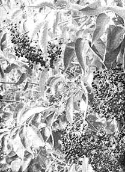
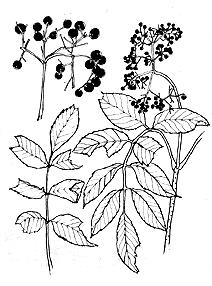
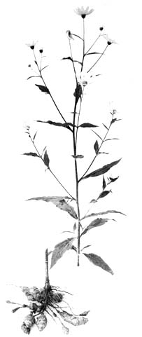
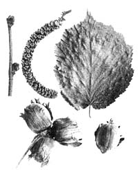
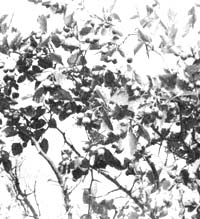

Food Without Farming
James E. Churchill talks about more wild foods in this series: elderberries, Jerusalem artichokes, hazelnuts, sunflowers, and apples.
By James E. Churchill
September/October 1971
by JAMES E. CHURCHILL
September is a harvest month here in Wisconsin and a food forager could work himself into exhaustion and still not gather a substantial fraction of the available free-for-the-gathering eats. Wild grapes are ripe . . . arrowheads are mature enough to dig . . . blackberries, hickory nuts, walnuts and butternuts are ready to harvest.
We've already talked about such wild foods in this series, however, so let's get on to others that we haven't yet mentioned: elderberries, Jerusalem artichokes, hazelnuts, sunflowers and apples. Wild and semi-wild.
Elderberries have a very long food-bearing season in our area. I've seen ripe elderberries while picking blackberries in August and I've seen them while duck hunting in October. I think there's a good possibility that some elderberry bunches are almost everbearing. Either a single plant bears twice during the year or different plants in a bunch ripen at different times and so produce fruit over an almost-three-month period.
Of course, if a three-month fruit bearing season isn't long enough for you, you'll find the flowers that cluster in white umbrellas weeks before the fruit is ripe to be good eating also.
Nor does this exhaust all the elderberry's possibilities. The stem or wood of the elderberry plant is a tube surrounding a white pith center. This tube-cut into six-inch lengths with its pith center pushed out by a wire heated red hot-makes a good spike for tapping maple trees in the spring. Then too, my son says the elderberry stem makes the best trap stake for trapping wild animals as he can push the odorous attractor scent into the hollowed out stick. The Indians made a blow gun from six-foot lengths of elderberry and I'm told they also used the hollowed-out sticks as snorkel tubes when hunting waterfowl.
In this last use of the stems, strong swimmers quietly entered the water-out of sight of a flock of ducks-and swam on their backs under the surface (with nostrils pinched shut), breathing through the elderberry tubes. When they reached the birds, the swimmers grasped the feet of the waterfowl, pulled them under and drowned them without alarming the others. Sounds like it might take some practice.
Elderberry blossoms can be gathered by shaking them into a container when they're ready to fall. If this is done at the right time, the fruit-bearing capabilities of the plant will not be impared. Make tea from these blossoms by covering them with cold water (watch for floating insects) and allowing them to set for 24 hours. Strain out the blooms, add a dash of lemon or sumac juice and whip in honey until it pleases your palate.
You also can mix elderberry blossoms with your favorite pancake recipe or use them for Elderberry Toast. For the latter, make a batter by mixing together one egg, a dash of salt and a cup of milk. Whip well, add all the elderberry blossoms the mixture will hold and blend very well. Then slice whole grain wheat bread into quarter-inch slices, dip the slabs into the batter and fry them to a golden brown in a pan containing bacon grease.
Another good food made from blossoms is Elderberry Fritter. For this one, make a batter by mixing one cup flour, one teaspoon baking powder, 1/8 teaspoon salt, one egg and 1/2 cup milk. Pick six large clumps of blossoms, stems and all. Holding the stems, dip the blossoms into the batter, drop into hot oil and fry until golden brown.
Elderberries are a very good source of vitamin C, in case you're looking for yet an additional source, and the fruit can be prepared in many ways.
Elderberry Jelly is made by simmering the ripe fruit for 15 minutes and then extracting the juice with a jelly bag. (A method of making and using a jelly bag is explained in MOTHER NO. 6.) There's no need to pick the elderberries from the stems either, so this is a speedy process. To each 2-3/4 cups of elderberry juice add the juice of two lemons, one box of commercial pectin and 4-1/2 cups of raw sugar. When you use commercial pectin you have the directions for jelly making contained in a sheet in the box so we won't have to go into that here. When the jelly is done pour it into sterilized jars and seal with paraffin.
Elderberry juice and sumac juice go so well together that I would like to mention it here again for the folks who missed the sumac recipes in MOTHER NO. 7. Make elderberry and sumac juice for drinking by adding four cups sumac juice to one cup of elderberry juice. Sweeten to taste with honey, maple sugar or raw sugar. A good jelly can be made by combining half elderberry and half sumac juice and proceeding as with elderberry jelly.
If you happen to like wine, here's a good recipe for the elderberry variety. I haven't actually made this one but I noticed that a two-year-old sample of the formula mellowed the conversation at a fishing party this spring.
Pick four pounds of elderberries. Remove the main stem but leave the small branch stems. Drop the fruit in water to float out the impurities, then remove from the water and place in a two gallon jar. Crush the berries and add four pounds of sugar, seven pints of water and one cake of yeast. (Boil the water and cool it before adding to the fruit, add sugar and dissolve the cake of yeast in a cup of the boiled water while the water is still warm.
Let the mixture stand covered in a warm room until bubbling ceases and strain through a fine cloth into gallon jugs. Stopper with cotton for three weeks. Remove cotton, cap and let age for one year . . . if you have the patience.
While you're waiting for the wine to age, of course, you could be finding some sunflowers. Wild sunflowers-many times smaller than the tame varieties-grow here in Wisconsin along roadsides and around abandoned buildings and farmsteads. If we can beat the birds to them we pick after the heads have turned brown.
Our Corona Grain Mill deals very seeds and we grind shell and all together for flour. We add this flour to our whole grain recipes and feel sure we are getting some of the prodigious amounts of vitamins that the seeds contain. I haven't worked with sunflowers beyond this point but there is a wide variety of literature available on the plant. One good example is J.I. Rodale's Sunflower Seed: The Miracle Food. Our world is going to miss Mr. Rodale but his great work will live on through his many publications and many, many apostles.
A relative of the sunflower that I have used much more extensively than the sunflower itself is the Jerusalem artichoke.
Jerusalem artichokes have never grown in Jerusalem and are not artichokes . . . so some terrific word corruptions must have occurred somewhere along the way. Possibly the reputed Indian custom of boiling the plant's sunflower-like heads and serving them with marrow influenced the pioneers to call it an artichoke, but the best part of the Jerusalem artichoke is the potato-like tuber that grows on the roots.
This tuber has some interesting qualities. If left in the ground where it grows, it will keep right through the winter. Thus it can be harvested in early spring as well as in the fall . . . which is especially welcome since early spring is a rather difficult time to find root crops. The second important quality is that it has most of its available starch in the form of inulin which is definitely more useful than common starch (especially to diabetics and dieters).
The tubers from Jerusalem artichokes taste a lot like arrowbead to me and I treat them almost the same. I dig the root bulbs in late October, wash them well and immediately peel and slice a few into salt and vinegar. These sliced tubers are placed in the refrigerator overnight and allowed to crispen. We serve them for meals the next day as cucumber slices are usually served and even eat Jerusalem artichoke sandwiches by placing the slightly pickled slices between slabs of buttered whole wheat bread. The slices also make a good addition to any raw salad.
Jerusalem artichokes make a good cooked vegetable. Clean and scrape 1-1/2 pounds of tubers. Drop into slightly-salted boiling water and boil until tender (about 15 minutes.) Don't overcook these delicious tubers as they tend to get tough. Remove from the water, drain, cool and slice. Chop one medium onion and mix with the slices. Add one sliced, boiled egg. Mix in your favorite salad dressing, chill and serve.
Boil the tubers or bake them and use for a side dish with a roast. Anyway you cook them, Jerusalem artichokes will add enjoyment to your food foraging.
Another food I enjoy very much is the hazelnut. This is a shrub-rather than a tree-and rarely grows more than eight feet tall. What makes the hazelnut especially noteworthy is its ability to grow north of the hickory nut-walnut line. In some areas here in Wisconsin, the hazelnut is the dominant shrub and yields good sweet nuts in bountiful plenty year after year. Strangely enough, however, many of the farmers in northern Wisconsin have never used the hazelnut for food. They seem to think of it as some kind of scrub brush instead of a possible food source.
Hazelnuts are ready to pick in September as soon as the large husk starts to turn brown. Indeed, the nuts don't cling too long after the husks start to open before they're all gone . . . picked up and stored by the chipmunks, squirrels and birds. If you're too late to find them on the bush, go into hazelnut territory with an axe and knock hollow logs apart. With any luck you'll find a cache of nuts-sometimes a gallon or more-stored by the frisky little chipmunk. It's a good survival tip to know.
Cracking hazelnuts is really no great chore to someone accustomed to wrestling with hickory nuts and walnuts. The job can be made easier yet by putting the hazels on a cookie sheet in a warm oven until they spread slightly at the seams. Tap the cracks with a hammer and the good, sweet nuts will roll out.
Many people now call the hazelnut a filbert and there are a number of different imported and domestic varieties growing throughout the United States. To the best of my knowledge all the varieties yield nuts that are identical except for size, and even the smallest are worth going after. I guess our Wisconsin variety, Corylus Americanus, is the smallest . . . and it's still at least the size of an acorn.
Hazelnuts are very good cracked and eaten from hand, cracked and toasted with butter or ground and mixed in cakes and pies. Our family always had a heaping bowl of hazelnuts at Christmas time when I was growing up and, if I remember correctly, they were eaten as fast as the bigger domestic varieties of nuts. In fact, my mother says that no matter how many hazelnuts you gather you will never have enough.
A good recipe to try the nuts on is Cattail and Hazelnut Salad. Shell and coarsely grind 3/4 cup hazelnuts and pull and thinly slice two cups of new cattail shoots. Mix together and add one cup of a green plant, if you can find one. This might be sheep sorrel (MOTHER NO. 8) or clover as they both stay green very late in the year. Chop the green plant and toss with the nuts and cattail shoots. Add bacon grease or other salad dressing and enjoy.
Hazelnut cakes are also mighty tempting. Make them first by grinding five cups of hazelnut meats. Then sift 2-3/4 cups brown sugar and whip six egg whites and 1/8 teaspoon salt until stiff. Add the sugar gradually, whipping all the while. Further add one teaspoon vanilla and fold in the ground nuts. Roll in brown sugar and bake on a greased tin in a 325° oven until brown. If you have any left, send them to me.
Another good hazelnut dessert is Hazelnut Torte. Sift 1/2 cup of brown sugar and beat into four egg yolks. Beat until creamy. Grind 1/2 cup hazelnuts and whip stiff four egg whites and 1/8 teaspoon salt. Fold all the ingredients together and bake in an eight-inch pan at 325° for about 40 minutes. Remove from the oven, let cool and spread whipped cream over the top . . . then sprinkle with more finely ground hazelnuts.
September is also a very good month for gathering wild apples which, surprisingly enough, are not native to this continent. "he first apples were brought here from Europe . . . but they spree even faster than civilization through the new land and soon became an important food to the pioneers. Hundreds-maybe thousands-of recipes have been developed for using them and a few particularly useful ones are for apple butter, apple sauce and apple jelly.
Apple butter can be made and canned at the same time by washing and coring 12 pounds of good ripe apples. Cut into quarters. nearly cover with water and cook very gently for 1-1/2 hours. Put the pulp through a fine strainer. Measure it and add 1/2 can brown sugar to each cupful of pulp. Further add the grated rind and juice from two lemons, 1-1/2 teaspoon cinnamon, 1/2 tablespoon spoon cloves and 1/4 teaspoon allspice. Bring to a boil, remove from fire and cool. Now stir in one cup of elderberry juice and place three-quarters of the mixture in five one pint jars. Set aside the rest. Put the pint jars in a cool oven, bring it gradually to 300° and bake the apple butter until it thickens. Watch it closely and, as the butter shrinks, add pulp from the portion set aside. When all the pulp is in the jars and it is thick, but still moist, seal the jars.
The same method is used for making apple sauce except that the mixture is boiled until it is soft and is not baked at all.
The hard green varieties of wild apples apparently were created just for making jelly. Slice them after the first frost, cover with water and cook until soft. Skim off or strain the juice through a jelly bag, combine with equal amounts of sugar, cook until it passes the jelly test and pour into sterilized jars. Ask someone who knows what juice looks like once it has cooked long enough to pass the jelly test when dripped from a spoon. This is a phenomenon that has to be observed at first hand to be useful. Words just won't make a jelly tester out of anyone.
Another good jelly is made by substituting elderberry juice half the apple juice in the apple jelly recipe.
Any food forager worth his salt should know of apple tree: growing along roadsides, in public hunting grounds, around abandoned farms or back in the woods that will yield huge delicious apples worth keeping over winter.
A good way to keep such apples, if you don't have a root cellar is to bury a five gallon or larger can in the ground with the top at least 18 inches below the surface. Wash, dry and wrap each apple in newspaper and place in the can. Cover with a water-tight lid and fill the 18-inch hole with leaves.
On top of the ground make a foot-high ring of screen slightly larger than the hole and fill this with leaves also. Over the top of it all lay a sheet of black plastic and hold the edges of the plastic down with stones. Apples stored this way keep very well all winter, even in our cold climate. Once you dig them up, however don't try to bury them again as they may freeze (of course, for that matter, frozen apples can be eaten too). If you have an abundant harvest of apples to store, just bury more five gallon cans.
See you next issue,
 elderberries (Sambacus canadensis) |
 elderberries: line detail |
 wild sunflower (Helianthus annuus) |
 Jerusalem artichoke (Helianthus tuberosus) |
 hazelnut (Corylus Americana) |
 wild apples (crataequs Mollis) |
|
 |
|
|